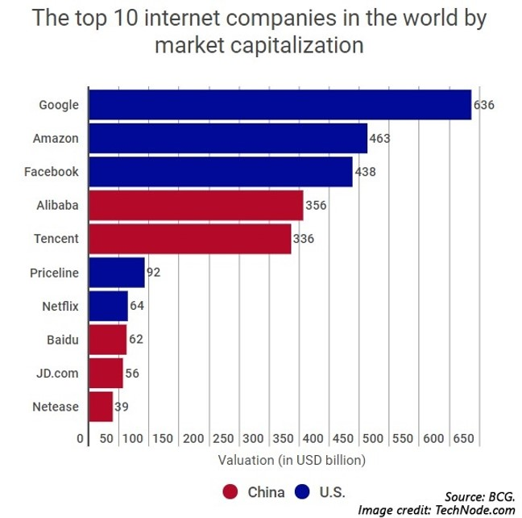
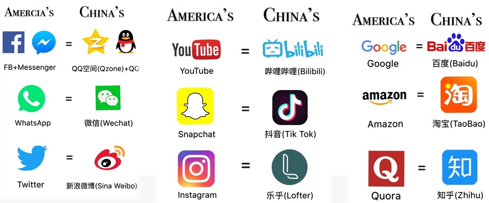
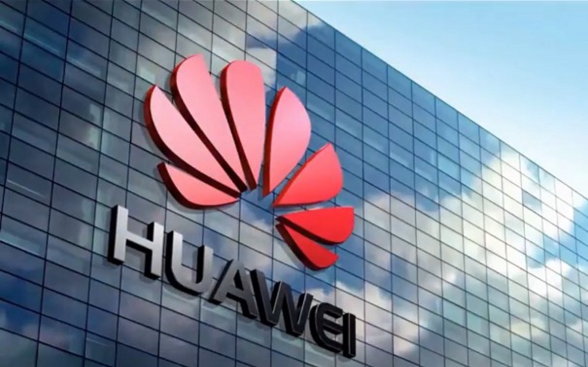

Derecho de informática en China
En China una de las cosas que más observamos desde afuera es el tema de la censura. Su sistema férreo que busca controlar todo lo que se mueve en su territorio, tanto lo que entra como lo que sale. En China hay mucha tecnología prohibida y algunas son:
Google: Básicamente está prohibida por el acceso a la información que podrían tener los ciudadanos chinos, información como, por ejemplo, la protesta de Tian Na Meng en 1989. Información imposible de encontrar utilizando los buscadores chinos.
Facebook y Twitter: La razón de ambas es similar, básicamente es por la libertad de poder publicar de todo tipo y no tener control sobre ella, y en ultima instancia que los datos de sus ciudadanos se alojen fuera de sus fronteras.
Otra razón por la que hay aplicaciones censuradas o prohibidas en el país asiático es porque el gobierno chino quiere desarrollar su propia industria de internet, y verdaderamente funciona. La industria del internet en china es la única que puede competir con las de Estados Unidos ahora y en el futuro.
Los programas de informática en China (sus equivalentes a Facebook, Twitter, etc.):
Y entonces, ¿Cuáles son los servicios que reemplazan a los censurados?
El caso Huawei:
El conflicto de Huawei y Estados Unidos tiene un largo antecedente. Básicamente el gobierno de los Estados Unidos sospecha que la arquitectura de telecomunicaciones de Huawei es utilizada por China para espiar organismos claves de la seguridad estadounidense.
En sí, no hay evidencia definitiva pero las medidas impuestas contra Huawei desde 2018 (año en el que EEUU prohíbe la venta de celulares de la marca en su territorio) han provocado que surjan especulaciones muy elaboradas.
Una de ellas menciona que una empresa de microprocesadores colaboraba con el ejército de liberación china. La historia fue desmentida por varias fuentes en los que destaca Amazon y Apple.
¿Y sí no hay pruebas en qué se basa el gobierno de Donald Trump?
El caso más relevante es de Meng Whanzou, que es hija del fundador de Huawei y CEO de la compañía. En diciembre del 2018 es acusada de haber violado acuerdos comerciales firmados entre EEUU y China, tras haber ofrecido insumos a una empresa iraní de telecomunicaciones mediante Skycom, una empresa que (según la justicia de EEUU) es amparada por Huawei.
 El caso Huawei cerraría luego con un mutuo acuerdo entre ambas partes pero Huawei ya había empezado el desarrollo de su propio sistema operativo.Información extraida de: Aplicaciones Chinas, Xataka, RPP Noticias.